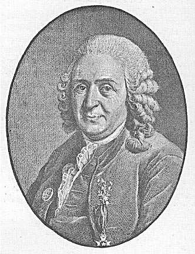
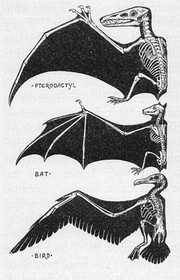
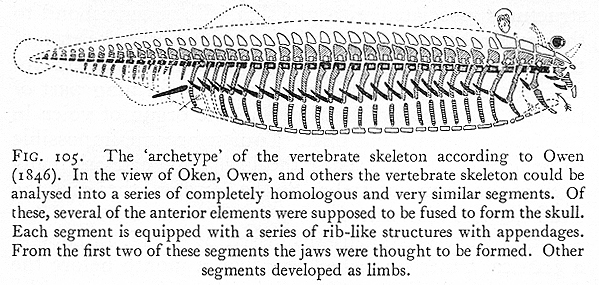

Les précurseurs et les influences de Darwin
2. La descendance commune
par John Wilkins
Précédent |
Table des matières |
Suivant |
Les théories de la descendance commune précèdent Darwin. La plus ancienne dont j'ai connaissance se trouve dans un livre de 1745 du physicien français Pierre Maupertuis, Vénus Physique, dans lequel il propose également que l'hérédité provienne également de chaque parent, sous forme particulaire, avec un rapport semblable à celui de Mendel1. Le grand-père de Charles, Erasmus Darwin, a également proposé cette idée (Zoonomia, 1795, section 39, « Génération ») dans un passage spéculatif, où il pensait que tous les animaux à sang chaud descendaient d'un seul « filament vivant » créé par Dieu, s'approchant ainsi de la descendance commune pour tous les organismes :
Tout cela semble avoir été progressivement produit au cours de nombreuses générations par l'effort perpétuel des êtres vivants pour combler le manque de nourriture, et avoir été transmis à leur postérité avec une amélioration constante dans les fins requises.
...serait-il trop hardi d'imaginer que tous les animaux à sang chaud sont issus d'un seul filament vivant, que LA GRANDE CAUSE PREMIÈRE a doué d'animalité... ?2

Linnaeus (à droite)Une affirmation surprenante concernant une descendance commune limitée se trouve chez Linné, le grand initiateur de la taxonomie moderne, qui est couramment cité comme ayant pensé que les espèces étaient immuables. Dans ses dernières éditions de son Systema Naturae (1766), il a omis l'affirmation des éditions antérieures selon laquelle aucune nouvelle espèce ne surgit, après avoir observé l'hybridation et la distribution des variétés chez les plantes. Il a également fait la découverte, généralement attribuée à Goethe, selon laquelle toutes les feuilles, y compris les pétales floraux, subissent un processus de développement commun.
La vision dominante des espèces avant l'acceptation des vues de Darwin et de Wallace était qu'elles étaient statiques : il existait un type que les individus illustraient et auquel ils s'approchaient plus ou moins. Cette vision trouve ses racines dans l'influence d'Aristote, en particulier dans ses ouvrages Des parties des animaux, De la génération des animaux et Sur l'âme. Chaque type possède son essence, et la divergence par rapport au type n'est pas possible au-delà d'une certaine limite de corruption de l'essence. Une divergence trop importante menait à des « sports » et des « monstres » tels que des veaux à deux têtes et des chèvres sans pattes, ainsi qu'à des « types dégradés », souvent utilisés pour décrire les races humaines non européennes. Cette vision était effectivement ahistorique et était la plus prédominante dans les pays germanophones et francophones ; elle était connue sous le nom de transcendantalisme, et en Allemagne Naturphilosophie.
Richard Owen, un anatomiste de premier plan, avait développé une vision transcendentaliste des similitudes entre les types d'organismes, et il a forgé le terme « homologie » pour désigner les structures similaires qui sous-tendent les organes différents de diverses espèces3. Ainsi, une aile sur un ptérodactyle, un oiseau et un chauve-souris n'étaient que des analogues, car l'un utilisait des plumes et l'autre une membrane pour le vol, mais les os et la musculature des différentes ailes étaient homologues, car ils présentaient les mêmes formes, bien qu'altérées. Les ailes d'un papillon et d'un oiseau étaient simplement des analogues, car les ailes du papillon n'étaient en aucun cas la même structure que celles d'un oiseau.
Homologie (d'après Romanes' Darwin et après Darwin, vol I)

Owen avait attaqué Chambers et Lamarck, mais il était un progressionniste - c'est-à-dire qu'il acceptait qu'il y eût un changement progressif dans le registre fossile, aboutissant à l'apparition de l'homme. Chaque groupe différent avait un « archétype », mais les archétypes étaient comme un plan corporel idéalisé, plutôt que la structure d'un ancêtre. Cependant, Owen était vague sur le fait si cela impliquait une ascendance et quel était le mécanisme de la génération de nouvelles espèces, et il était certainement influent dans la mesure où il a fourni beaucoup de preuves utilisées par Darwin et surtout par Huxley. Si Huxley n'avait pas été si agressif dans ses débats avec Owen avant l'Origin, il est possible qu'il ait plus tard déclaré en faveur des théories de Darwin, mais dans les faits, il a été conduit à une opposition totale.
Il y avait de nombreux évolutionnistes pré-darwiniens dans les pays germanophones, et ils n'étaient pas tous des transcendentalistes sans notion de descendance historique, en particulier ceux intéressés par la théorie cellulaire, tels que Matthias Schleiden ou Franz Unger, qui imaginaient une cellule primordiale unique (Urzelle) à l'origine de toutes les espèces vivantes. La théorie d'Unger de 1852 peut être considérée comme une théorie complète de la descendance commune4, bien qu'il l'ait appliquée uniquement aux plantes. Intéressamment, Unger était le professeur de Mendel, et ses spéculations ont peut-être inspiré le travail de Mendel sur l'hérédité.
L'ami de Darwin venu d'Édimbourg, Robert Grant, qui avait un jour étonné Darwin par une exclamation enthousiaste en louange de Lamarck, et qui était un partisan de Geoffroy et de Lamarck jusqu'à très tard dans le débat, avait correspondu avec August Schweigger à Königsberg et Friedrich Tiedemann à Heidelberg, et vers 1826 environ, lui, ainsi que Schweigger et Tiedemann, se déclarèrent en faveur d'une origine commune pour les plantes et les animaux sur la base des stades larvaires des coraux5. Je ne sais pas s'ils ont jamais fait une déclaration sur le fait que toute la vie a une descendance commune. Desmond (1989) pense que Darwin a peut-être été plus influencé par Grant qu'il ne l'a admis plus tard dans l'Autobiographie, mais qu'il a minimisé cette influence parce que Grant avait montré un comportement possessif lorsque Darwin a une fois traité l'un des intérêts spéciaux de Grant (Darwin avait environ dix-sept ans à l'époque) et aussi parce qu'il souhaitait marquer sa propre propriété de « sa théorie ». En l'absence de toute preuve des motivations de Darwin envers Grant (ils restèrent amis pendant un certain temps, mais le radicalisme politique croissant de Grant effraya Darwin, qui était whig, le parti de la classe moyenne), je pense que cela reste non prouvé, et compte tenu du comportement généreux de Darwin envers d'autres de ses maîtres et sources avant la publication de l'Origine, il est peu probable, dans l'ensemble.
L'archétype d'Owen pour les vertébrés n'était pas
étranger à l'amphioxus, un amphioxus (d'après E. S.
Russell's Form and Function 1912). 
La propre déclaration de Darwin a été faite par un raisonnement analogue à partir de la descendance commune des lignées qu'il avait établies : « Je crois que les animaux descendent d'au plus quatre ou cinq ancêtres, et les plantes d'un nombre égal ou inférieur. »6 Jusqu'ici, Darwin n'est pas en grande opposition avec les vues de Lamarck, Geoffroy, Macleay ou Owen sur le nombre approximatif des grandes classes d'êtres vivants. Ensuite, cependant, il continue en disant
Une analogie m'aurait conduit encore plus loin, à savoir à la croyance que tous les animaux et les plantes descendent d'un seul prototype. Mais l'analogie peut être une guide trompeuse. Néanmoins, tous les êtres vivants ont beaucoup en commun, dans leur composition chimique, leur structure cellulaire, leurs lois de croissance et leur susceptibilité aux influences nuisibles. [Insistance de ma part]
Il est clair qu'il considérait ces arguments comme influents, et ceux-ci, ou plutôt des versions plus à jour impliquant l'ADN, l'embryologie comparative et d'autres similitudes, sont toujours utilisés aujourd'hui. Je ne pense pas que les preuves montrent que Darwin a été influencé dans sa théorie de la descendance commune directement par quelque précurseur, bien qu'il ait clairement traité les mêmes problèmes posés par Lamarck, Lyell, Grant et Owen que les autres.
2 King-Hele 1968, p 85, 86.
3 cf. Ruse 1979, pp 116-125, Mayr 1982, p 464, Desmond 1985
4 cf. Temkin 1959, Mayr 1982, p 390
5 Desmond 1989: p 69f
Précédent |
Table des matières |
Suivant |
| Les FAQ | Fichiers à lire absolument | Index | Créationnisme | Évolution | Âge de la Terre | Géologie du déluge | Catastrophisme | Débats |